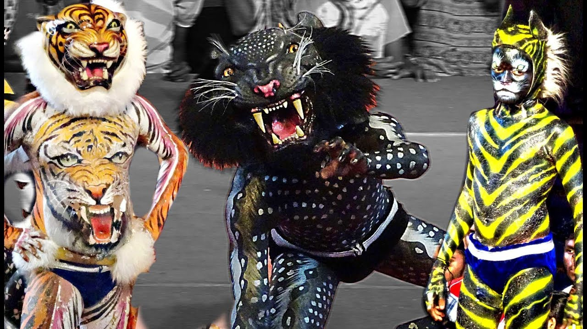
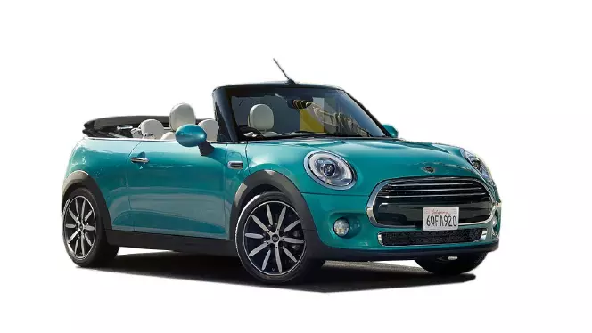

bokka yecha ullar kudla da javaner mai neer matha aanda ongguna onthe kammi malpule sari barpe by Claudio Monteverdi is an extended composition for the evening vespers on Marian feasts, printed in 1610. The composer set the usual Latin psalms and Magnificat, but also solo concertos in the style of the emerging opera. The ambitious composition, which uses Gregorian chant as cantus firmus, is scored for soloists, choirs of up to ten parts, and orchestra. Monteverdi wrote it when he was maestro di capella in Mantua, where he served as musician and composer for the Gonzagas, the Dukes of Mantua. He had it printed in Venice, with a dedication to Pope Paul V dated 1 September 1610 (pages from a copy pictured). He then travelled to Rome to deliver it to Pope Paul in person. Monteverdi became director of music at San Marco in Venice in 1613. His Vespers represent a milestone of music history at the transition from Renaissance to Baroque styles
ಮಂಗಳೂರಿನ ರಥ ಬೀದಿ ವೆಂಕಟರಮಣ ದೇವಸ್ಥಾನ, ಕುದ್ರೋಳಿ ಗೋಕರ್ಣನಾಥೇಶ್ವರ ದೇವಸ್ಥಾನ , ಬೋಳಾರ ಮಂಗಳಾದೇವಿ ದೇವಸ್ಥಾನ, ಉರ್ವ ಮಾರಿಗುಡಿ, ಕಟೀಲು ದುರ್ಗಾಪರಮೇಶ್ವರಿ ದೇವಾಲಯಗಳಲ್ಲಿ ಗಳಲ್ಲಿ ಪಿಲಿನಲಿಕೆ ತಂಡಗಳ ನೃತ್ಯ ಸಾಮಾನ್ಯವಾಗಿ ನೋಡಬಹುದಾಗಿದೆ. ದಸರಾ ಸಂದರ್ಭದಲ್ಲಿ ಎಲ್ಲೆಂದರಲ್ಲಿ ಈ ಪಟ್ಟೆಪಿಲಿ, ಚಿಟ್ಟೆ ಪಿಲಿ, ಪಚ್ಚೆ ಪಿಲಿ, ಅಪ್ಪೆ ಪಿಲಿ, ಕಪ್ಪು ಪಿಲಿ, ಬೊಲ್ದು ಪಿಲಿ, ಹೀಗೆ ನಾನಾ ರೀತಿಯ ಹುಲಿಗಳು ಮತ್ತೆ ಮತ್ತೆ ಎದುರಾಗುತ್ತವೆ. ತಮ್ಮ ವಿಭಿನ ಕಸರತ್ತುಗಳಾದ ತೇಲ್ ಬಗ್ಗುನಿ, ಮಂಕಿ ಡೈ, ಎರಡು ಕೈಗಳಿಂದ ನಡೆಯುವುದು ಸಹಿತ ವಿವಿಧ ಸಾಹಸಗಳನ್ನು ಈ ತಂಡಗಳು ಪ್ರದರ್ಶಿಸಿ ಜನ ಮನ ಗೆಲ್ಲುತ್ತವ
this is my new paragraph about programming and some script As in other professional wrestling promotions, WWE shows are not legitimate contests, but purely entertainment-based performance theater, featuring storyline-driven, scripted, and choreographed matches, though matches often include moves that can put performers at risk of injury, even death, if not performed correctly. This was first publicly acknowledged by WWE's owner Vince McMahon in 1989 to avoid taxes from athletic commissions. Since the 1980s, WWE publicly has branded its product as sports entertainment, acknowledging the product's roots in competitive sport and dramatic theater.
Most programming languages consist of instructions for computers. There are programmable machines that use a set of specific instructions, rather than general programming languages. Early ones preceded the invention of the digital computer, the first probably being the automatic flute player described in the 9th century by the brothers Musa in Baghdad, during the Islamic Golden Age.[1] Since the early 1800s, programs have been used to direct the behavior of machines such as Jacquard looms, music boxes and player pianos.[2] The programs for these machines (such as a player piano's scrolls) did not produce different behavior in response to different inputs or conditions.
 Mini is a British automotive marque founded in 1969, owned by German automotive company BMW since 2000, and used by them for a range of small cars. The word Mini has been used in car model names since 1959, and in 1969 it became a marque in its own right when the name "Mini" replaced the separate "Austin Mini" and "Morris Mini" car model names.[2][3] BMW acquired the marque in 1994 when it bought Rover Group (formerly British Leyland), which owned Mini, among other brands.[4] asion1 of the internal car in the magazine of Cars came into global use during the 20th century, and developed economies depend on them. The year 1886 is regarded as the birth year of the modern car when German inventor Karl Benz patented his Benz Patent-Motorwagen. Cars became widely available in the early 20th century.One of the first cars accessible to the masses was the 1908 Model T, an American car manufactured by the Ford Motor Company Cars were rapidly adopted in the US, where they replaced animal-drawn carriages and carts, but took much longer to be accepted in Western Europe and other parts of the world.